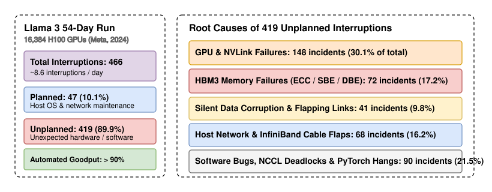
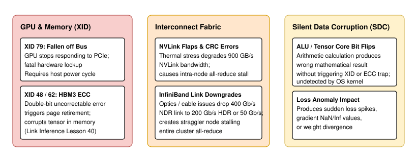
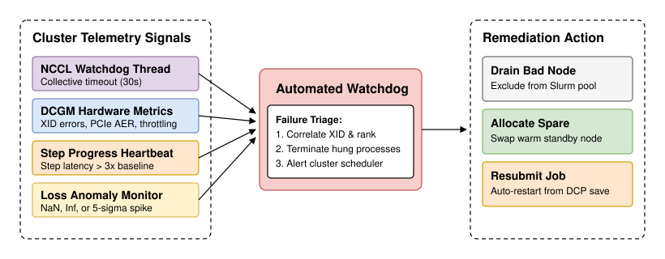
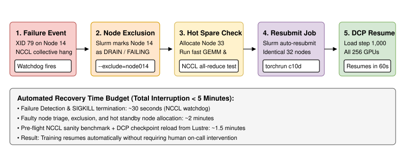

Failures, Restarts and Elastic Training
Introduction
Training a frontier large language model is one of the most mechanically demanding computational tasks in modern engineering. A multi-week pretraining run requires thousands of high-performance accelerators, terabytes of High Bandwidth Memory (HBM3), optical transceivers, and InfiniBand switches to operate in synchronized lockstep at thermal limits [1]. At this scale, hardware failures are not rare anomalies; they are continuous statistical certainties. When training across thousands of GPUs, an interruption occurs every few hours.
If recovery requires manual on-call triage—an engineer waking up, reading logs, isolating a crashed node, editing cluster hostfiles, and resubmitting the job—cluster utilization collapses. In Meta's technical report on Llama 3 [1], pretraining on 16,384 NVIDIA H100 GPUs experienced 466 interruptions over a 54-day period (averaging one interruption every 2.8 hours). Despite this relentless failure rate, Meta sustained greater than 90% effective training time. Figure 1 breaks down the empirical root causes behind these interruptions.

Maximizing goodput—the ratio of productive training time to total elapsed wall-clock time—requires an automated resilience architecture [2]. The infrastructure must detect failures in seconds using non-blocking watchdogs, isolate faulty nodes without human intervention, swap in pre-warmed standby hardware, and reload distributed checkpoints seamlessly. While PyTorch provides elastic orchestration through torchrun [3], production pretraining clusters handle failures through fixed topologies with hot standby nodes to preserve exact mathematical optimization dynamics.
In this lesson, we analyze empirical failure data from frontier training runs, scale failure probabilities mathematically to our running 256-GPU cluster, dissect the failure taxonomy from NVIDIA XID errors to Silent Data Corruption, evaluate multi-tier watchdog detection mechanisms, construct the goodput equation, compare elastic scaling with hot-spare replacement, and implement an automated Slurm and Python recovery harness.
Clarifying the Problem
Cluster reliability questions in infrastructure interviews typically explore how to protect expensive pretraining runs against hardware attrition. Here is how a discussion between a candidate and an interviewer unfolds:
Candidate: What is the scale and duration of our pretraining cluster?
Interviewer: We are pretraining our Llama 3.1 8B model across 256 NVIDIA H100 80 GB GPUs housed in 32 nodes (8 GPUs per node). The run processes 1 trillion tokens over approximately 5.5 days (33,800 GPU-hours).
Candidate: What is our target for cluster availability and goodput?
Interviewer: Total goodput—useful training compute divided by total elapsed wall-clock time—must exceed 95%. When an accelerator or network link crashes, the run must recover automatically without paging human on-call engineers.
Candidate: How quickly can our infrastructure detect a failure and restart?
Interviewer: Our shared Lustre storage reloads a sharded PyTorch Distributed Checkpoint (DCP) in about 1 minute. However, if a rank hangs silently inside an NCCL collective, default timeouts can stall the cluster for 30 minutes before aborting. We need detection within 30 seconds and total restart within 5 minutes.
Candidate: Should we use elastic training to dynamically continue on 31 nodes if one node fails?
Interviewer: You tell me. What happens to the global batch size, learning rate schedule, and FSDP sharding if we drop a node mid-run, and is that preferable to keeping spare nodes?
The question underneath is: How do we model failure rates from first principles, architect automated watchdog detection, and design a restart workflow that guarantees near-perfect goodput without destabilizing training dynamics? To answer it, we begin with empirical failure statistics.
How Often Training Fails: The Numbers from Llama 3
The 16,384-GPU Baseline
In the technical report The Llama 3 Herd of Models [1], Meta published the most detailed reliability dataset available for large-scale GPU pretraining. During a representative 54-day pretraining window on 16,384 NVIDIA H100 SXM GPUs, the run recorded:
- Total interruptions: 466 incidents across 54 days (an average of 8.63 interruptions per day, or one interruption every 2.78 hours).
- Planned interruptions: 47 incidents (10.1%), primarily driven by automated host operating system maintenance, security patching, and scheduled network re-routing.
- Unplanned interruptions: 419 incidents (89.9%), averaging 7.76 unexpected failures per day (one every 3.09 hours).
- Human intervention: Automated recovery handled over 99% of incidents; human engineers intervened only three times across the entire 54-day run.
As detailed in Figure 1, hardware failures caused over 78% of all unplanned interruptions: general GPU and NVLink failures accounted for 30.1% (148 incidents), HBM3 memory errors accounted for 17.2% (72 incidents), and network link degradation accounted for 16.2% (68 incidents).
Scaling Failure Probabilities to Our 256-GPU Cluster
To plan our running pretraining scenario, we scale Meta's empirical failure rate to our cluster of 256 GPUs. First, calculate the total GPU-days in Meta's observation window: The empirical unplanned failure rate per GPU-day, , is: This corresponds to a single-GPU Mean Time Between Failures of: While a single GPU is highly reliable (failing once every 5.8 years), distributed pretraining is an all-or-nothing workload: because all GPUs synchronize gradients at every step, a failure on any single GPU halts the entire cluster. For our cluster of GPUs, the aggregate failure rate is: The Mean Time Between Failures (MTBF, ) for our 256-GPU cluster is: Our pretraining run processes 1 trillion tokens over 5.5 days (Lesson 7, Training FLOPs, Time and MFU). Multiplying the daily failure rate by the run duration gives the expected number of interruptions: Across our entire 5.5-day pretraining run, we expect less than one unplanned interruption on average. However, because a single failure can occur at any moment, automated detection and recovery mechanisms are essential to prevent that failure from stalling the cluster indefinitely.
Failure Taxonomy: From XID Errors to Silent Corruption
Diagnosing cluster crashes requires understanding the physical mechanisms that halt distributed execution. Failures span three primary architectural layers (Figure 3).

1. GPU Hardware and NVIDIA XID Errors
When an accelerator encounters a fatal condition, the NVIDIA kernel driver logs an XID error event to the Linux system log (dmesg) [4] (see Inference Lesson 40, Reliability and Rollouts):
- XID 79 (GPU fallen off the bus): The GPU stops acknowledging PCIe transactions entirely, typically caused by a power supply glitch, thermal expansion fault, or physical interposer crack. The device becomes inaccessible (
nvidia-smireportsUnable to determine the device handle). Recovery requires an out-of-band host reset or node power cycle. - XID 48 (Double-Bit ECC Error in HBM3): High Bandwidth Memory uses Error-Correcting Code (ECC) to detect and correct bit flips. A single-bit error is corrected in hardware without interruption. A double-bit uncorrectable error (DBE) corrupts weight or activation data in HBM, generating XID 48 and immediately halting the running CUDA kernel to prevent corrupted data from propagating.
- XID 62 (Dynamic Page Retirement): When a memory address accumulates multiple correctable errors, the driver retires the physical memory page. While page retirement prevents uncorrectable crashes, excessive retirements indicate an aging, unreliable HBM stack that must be replaced.
- XID 31 (GPU Memory Page Fault): A software rank attempts to access unmapped GPU virtual memory, typically caused by out-of-bounds CUDA pointer arithmetic or mismatched collective communication buffer pointers.
2. Interconnect and Network Fabric Flaps
Training an 8B model with FSDP across 256 GPUs transfers 16 GB of gradients per step over intra-node NVLink (900 GB/s) and inter-node InfiniBand (50 GB/s per GPU). Network degradations manifest as:
- NVLink CRC Packet Errors: High temperatures inside an 8×H100 node cause NVLink signal degradation. While hardware retries recover individual packets, excessive retries throttle NVLink bandwidth from 900 GB/s down to 300 GB/s, creating a massive intra-node bottleneck.
- InfiniBand Link Downgrades and Flaps: Dirty optical transceivers or failing fiber cables cause an InfiniBand NDR NIC (400 Gb/s) to drop to 200 Gb/s (HDR) or flap repeatedly. Because ring and tree all-reduce collectives synchronize across all ranks in sequence (Lesson 10, Data Parallelism and All-Reduce), a single degraded link on one node throttles collective throughput across all 256 GPUs.
3. Silent Data Corruption (SDC)
The most dangerous failure mode in large-scale training is Silent Data Corruption (SDC) [1][5]. SDC occurs when a transistor in an ALU or Tensor Core experiences a transient bit flip during a matrix multiplication. Unlike ECC errors or XID traps, SDC does not trigger any hardware interrupt or operating system exception: the kernel executes normally, but produces an erroneous numerical result.
If SDC flips an exponent bit in a forward pass activation tensor, the subsequent cross-entropy loss computation suddenly spikes to millions or produces NaN (Not a Number) and Inf values. Backpropagating a NaN gradient overwrites all parameter weights with NaN, permanently destroying the checkpoint. Detecting SDC requires continuous loss anomaly monitoring and mathematical integrity verification.
Detection: Watchdogs, Heartbeats, and Health Checks
By default, if an accelerator crashes on rank 112, the other 255 GPUs do not crash immediately: they proceed to the next collective communication barrier (such as an all-reduce) and wait. Without active detection, the 255 healthy GPUs will sit completely idle waiting for rank 112 until the default collective timeout (often 30 to 60 minutes) expires. Stalling 256 H100 GPUs for 30 minutes wastes 128 GPU-hours (~$384) per incident. Modern infrastructure deploys a multi-tier detection architecture (Figure 4).

1. NCCL Asynchronous Error Handling
PyTorch's distributed package incorporates an asynchronous error-handling thread for NCCL collectives [2][3]. Configuring the environment variables:
# Enable asynchronous error handling and non-blocking watchdog threads
export TORCH_NCCL_ASYNC_ERROR_HANDLING=1
export NCCL_ASYNC_ERROR_HANDLING=1
# Set aggressive collective timeout (default is 1800s / 30 minutes)
export TORCH_NCCL_HEARTBEAT_TIMEOUT_SEC=60
export NCCL_COMM_BLOCKING=0When enabled, a background watchdog thread continuously polls NCCL communicator status. If any rank fails or stops acknowledging collective ring transfers within 30 to 60 seconds, the watchdog immediately tears down the process group, sends SIGKILL to all local worker processes, and raises a Python exception. This prevents silent collective hangs and allows the job scheduler to initiate recovery within seconds.
2. Step Progress and Heartbeat Monitoring
Even if NCCL does not hang, hardware throttling (such as thermal clock down-clocking or network link flapping) can turn a healthy rank into a straggler. A straggler rank takes 5× longer to compute its forward pass, forcing the remaining 255 GPUs to sit idle waiting at the gradient all-reduce barrier.
The training harness records a step progress heartbeat: the timestamp and duration of every optimizer step. If the elapsed time for step exceeds 3× the moving average of the previous 100 steps (e.g., jumping from 850 ms to 3,000 ms), the watchdog flags an anomaly, logs telemetry from NVIDIA Data Center GPU Manager (DCGM), and halts the run if performance does not recover within 5 steps.
3. Pre-Flight Node Health Checks
When a failed node reboots, it must never be admitted immediately back into a production pretraining run without validation. Clusters execute automated pre-flight burn-in tests [1]:
- GPU Burn GEMM Test: Runs dense matrix multiplications on all 8 GPUs at 100% thermal design power (TDP) for 60 seconds, verifying that clocks reach 1,980 MHz without thermal throttling or XID errors.
- Intra-Node NVLink Bandwidth Test: Measures all-to-all and all-reduce bandwidth across the 8 internal GPUs, asserting throughput > 800 GB/s.
- Inter-Node NCCL All-Reduce Benchmark: Executes an all-reduce collective over InfiniBand, verifying NDR transfer speed > 45 GB/s per NIC.
If a node fails any pre-flight test, it is automatically marked DRAIN in Slurm, preventing it from corrupting subsequent training attempts.
Automated Recovery and Goodput
The Recovery Workflow
When the watchdog catches a fatal error, the cluster executes the automated recovery workflow illustrated in Figure 5:
- Fast Process Termination: The watchdog issues
SIGKILLto all Python processes across all 32 nodes, ensuring no orphan ranks hold GPU memory or TCP ports. - Faulty Node Triage and Exclusion: An orchestration daemon parses
dmesgand DCGM logs to extract the failed host ID (e.g.,node014). The scheduler marksnode014asDRAINand appends it to the job's exclusion list (sbatch --exclude=node014). - Standby Spare Allocation: The scheduler replaces the drained node with a pre-warmed idle standby node (e.g.,
node033) from a reserved pool of spare hardware. - Automatic Job Resubmission: The scheduler launches a fresh 32-node job executing
torchrun. - DCP Resumption: The 256 GPUs load the latest valid checkpoint from shared Lustre storage using PyTorch DCP (Lesson 28, Checkpointing), restoring model weights, master weights, Adam states, and DataLoader token offsets in under 60 seconds.

Elastic Training with torchrun: Semantics and Limitations
PyTorch provides built-in elastic training through torchrun using the --nnodes=min:max flag [3]:
# Launch elastic training allowing dynamic contraction from 32 to 30 nodes
torchrun \
--nnodes=30:32 \
--nproc_per_node=8 \
--rdzv_id=pretrain_run_8b \
--rdzv_backend=c10d \
--rdzv_endpoint=master-node:29500 \
pretrain.py --config config.yamlWhen configured with --nnodes=30:32, the PyTorch c10d rendezvous server allows training to proceed as long as at least 30 nodes (240 GPUs) are connected. If node 14 crashes, the remaining 31 nodes automatically re-rendezvous and continue training without terminating the job.
Why Pretraining Avoids Dynamic Elasticity
While dynamic elasticity is attractive in theory, frontier pretraining runs almost never use dynamic node contraction in production [1][6]. As illustrated in Figure 6, shrinking the cluster from 32 nodes (256 GPUs) to 31 nodes (248 GPUs) introduces severe algorithmic and systems problems:
- Global Batch Size Shift: In standard distributed training, global batch size equals micro-batch size gradient accumulation steps data-parallel ranks. Dropping from 256 ranks to 248 ranks drops global batch size from 512 sequences down to 496 sequences. Changing the batch size mid-run alters the gradient noise scale, requiring complex dynamical adjustments to learning rate schedules [7].
- Optimizer Momentum Perturbation: Changing the batch size and re-sharding model parameters across 248 ranks alters the empirical variance of gradient estimators, frequently triggering loss spikes.
- Re-sharding Overhead: Re-slicing parameter tensors across a non-power-of-two number of ranks (248) breaks tensor alignment and slows collective communication kernels.

Instead, industry standard practice is static topology with warm standby spares: maintain 2 to 4 spare nodes in the cluster. When a node fails, swap in a spare node to maintain the exact 32-node (256-GPU) topology, preserving complete mathematical invariance throughout the run.
The Goodput Equation
Goodput measures the efficiency of a distributed training cluster over its total operational lifecycle [2]:
Total wall-clock time is partitioned into four components (Figure 2):
- : Productive training compute.
- : Checkpoint save stalls, governed by save duration and interval : .
- : Compute rework lost upon failure. For failure rate , expected lost work per failure is : .
- : Downtime spent detecting crashes, allocating spares, and reloading checkpoints: .
Combining these terms yields the analytical goodput formula:
Worked Numerical Example: Our 256-GPU Cluster
Let us evaluate goodput for our 256-GPU pretraining run using our production parameters:
- Cluster MTBF (): 198 hours (8.25 days).
- Checkpoint interval (): 30 minutes ().
- Asynchronous save stall (): 2 seconds ().
- Total restart recovery time (): 4.5 minutes ().
Evaluate the individual penalty components:
- Checkpoint Save Overhead:
- Rework and Restart Downtime:
Evaluating total goodput:
On our 256-GPU cluster, goodput exceeds 99.7%! Total overhead from checkpointing, failure re-computation, and automated restarts accounts for less than 0.3% of total cluster time. In comparison, on a 16K-GPU cluster where MTBF drops to 3 hours, the rework and restart overhead climbs to ~9%, achieving the ~90.0% goodput observed in Llama 3.
Which reliability setup fits our run?
For our 256 H100 pretraining cluster, we select a static 32-node topology backed by 2 pre-warmed idle standby nodes, paired with an aggressive NCCL asynchronous watchdog (30s timeout) and automated Slurm job resubmission. Dynamic elastic contraction (running on 31 nodes) is strictly rejected because batch size shifts perturb optimizer momentum and risk loss instability. Checkpointing runs asynchronously every 30 minutes to Lustre. When a node fails, the watchdog triggers automated job resubmission, the faulty node is drained, a hot spare is swapped in, and PyTorch DCP restores states in under 4.5 minutes total downtime.
In Practice
The first tab provides a robust Slurm batch launch script with automated failure trapping, bad node exclusion, and job re-queuing. The second tab implements an active Python watchdog thread monitoring NCCL health, step latency heartbeats, and loss anomalies. The third tab executes a fast pre-flight cluster burn-in test validating GPU clocks and collective bandwidth before training begins.
#!/bin/bash
#SBATCH --job-name=pretrain_8b
#SBATCH --nodes=32
#SBATCH --ntasks-per-node=8
#SBATCH --gpus-per-node=8
#SBATCH --cpus-per-task=12
#SBATCH --time=7-00:00:00
#SBATCH --output=logs/%x_%j.out
#SBATCH --error=logs/%x_%j.err
#SBATCH --open-mode=append
set -euo pipefail
# Fail-safe trap: if job exits abnormally, identify failing node and resubmit
trap 'handle_failure' ERR SIGTERM
handle_failure() {
echo "[RECOVERY] Job interrupted at $(date). Triaging failure..."
# Extract hostnames that logged GPU XID errors in dmesg
BAD_NODES=$(srun --ntasks-per-node=1 bash -c 'dmesg -T | grep -E "NVRM: Xid" | tail -n 1 | awk "{print \$0}"' || true)
if [ -n "$BAD_NODES" ]; then
echo "[RECOVERY] Detected hardware fault on node. Appending to exclusion list."
# Update exclude list and resubmit identical 32-node job
sbatch --exclude="$BAD_NODES" "$0"
else
echo "[RECOVERY] Transient software/network hang. Resubmitting job to clean nodes..."
sbatch "$0"
fi
}
# Environment flags for non-blocking watchdog and aggressive timeout
export TORCH_NCCL_ASYNC_ERROR_HANDLING=1
export NCCL_ASYNC_ERROR_HANDLING=1
export TORCH_NCCL_HEARTBEAT_TIMEOUT_SEC=60
export NCCL_DEBUG=WARN
export PYTHONUNBUFFERED=1
MASTER_ADDR=$(scontrol show hostnames "$SLURM_JOB_NODELIST" | head -n 1)
MASTER_PORT=29500
echo "[LAUNCH] Starting 256-GPU pretraining with master $MASTER_ADDR:$MASTER_PORT"
srun --kill-on-bad-exit=1 \
torchrun \
--nnodes=32 \
--nproc_per_node=8 \
--rdzv_id="$SLURM_JOB_ID" \
--rdzv_backend=c10d \
--rdzv_endpoint="$MASTER_ADDR:$MASTER_PORT" \
pretrain.py --config configs/llama3_8b.yamlOther Talking Points
If there is extra time at the end of the interview, here are some additional talking points:
- Silent Data Corruption (SDC) detection via mathematical invariants: Implementing checksum kernels (such as Huang's checksum matrix multiplication) that detect tensor core bit flips during training without running expensive duplicate passes [5].
- Kubernetes vs Slurm orchestration for AI workloads: Comparing Slurm's deterministic MPI-native process management with Kubernetes Volcano/KubeRay operators, and why hyperscalers often pair Slurm with automated node health controllers.
- PyTorch Caching Allocator fragmentation: How fragmentation inside PyTorch's memory manager mimics out-of-memory errors, and how tuning
PYTORCH_CUDA_ALLOC_CONF=expandable_segments:Trueeliminates allocator-induced OOM crashes. - InfiniBand adaptive routing and congestion control: Preventing network hotspots in fat-tree network topologies using NVIDIA SHARP (Scalable Hierarchical Aggregation and Reduction Protocol) in-network computing.
- Thermal cycling and solder fatigue: Why training runs experience failure clusters right after job restarts: sudden thermal ramping from 35°C idle to 80°C peak load stresses micro-solder balls on BGA packages.
- Graceful preemption in public clouds: Handling Spot / preemptible cloud instances using AWS Spot termination notices (2-minute warning) or Google Cloud maintenance events to trigger immediate fast asynchronous checkpoints.
Summary
- At scale, hardware failures are statistical certainties: Meta's Llama 3 pretraining on 16K H100s experienced 419 unplanned interruptions in 54 days (~1 failure every 3 hours), dominated by GPU, NVLink, and HBM3 faults.
- Scaling to our 256-GPU cluster yields a Mean Time Between Failures of approximately 198 hours (~8.25 days), resulting in an expected 0.67 interruptions across our 5.5-day pretraining run.
- Failures span physical XID errors (XID 79 bus drops, XID 48 uncorrectable ECC), network link flapping, software deadlocks, and Silent Data Corruption (SDC) bit flips.
- The NCCL watchdog thread (
TORCH_NCCL_ASYNC_ERROR_HANDLING=1) detects collective deadlocks within 30 seconds, replacing default 30-minute hangs with fast automated process termination. - Static topologies with pre-warmed hot spares maintain invariant 32-node layouts, avoiding the batch size shifts, learning rate re-scaling, and loss instability inherent to dynamic elastic contraction.
- Total goodput exceeds 99.7% on our 256-GPU cluster under 30-minute asynchronous checkpointing, ensuring near-zero compute waste from hardware attrition.
Reference Material
[1] Meta AI. The Llama 3 Herd of Models. https://arxiv.org/abs/2407.21783.
[2] Narayanan et al. Memory-Efficient Pipeline-Parallel DNN Training. https://arxiv.org/abs/2006.09503.
[3] PyTorch torchrun Elastic Training documentation. https://pytorch.org/docs/stable/elastic/quickstart.html.
[4] NVIDIA Corporation. NVIDIA GPU XID Errors Documentation. https://docs.nvidia.com/deploy/xid-errors/index.html.
[5] Dixit et al. Silent Data Corruptions at Scale. https://arxiv.org/abs/2102.11245.
[6] Qiao et al. Pollux: Co-adaptive Cluster Scheduling for Goodput-Optimized Deep Learning. https://arxiv.org/abs/2008.12260.
[7] McCandlish et al. An Empirical Model of Large-Batch Training. https://arxiv.org/abs/1812.06162.
![ask alex]()
![ask alex expend]()